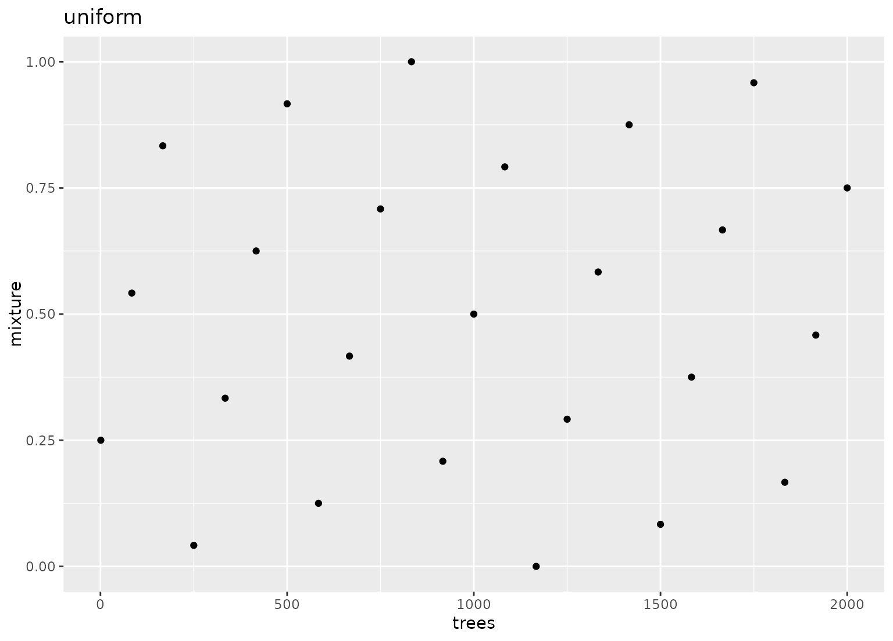

Experimental designs for computer experiments are used to construct parameter grids that try to cover the parameter space such that any portion of the space has does not have an observed combination that is unnecessarily close to any other point.
Usage
grid_space_filling(x, ..., size = 5, type = "any", original = TRUE)
# S3 method for class 'parameters'
grid_space_filling(
x,
...,
size = 5,
type = "any",
variogram_range = 0.5,
iter = 1000,
original = TRUE
)
# S3 method for class 'list'
grid_space_filling(
x,
...,
size = 5,
type = "any",
variogram_range = 0.5,
iter = 1000,
original = TRUE
)
# S3 method for class 'param'
grid_space_filling(
x,
...,
size = 5,
variogram_range = 0.5,
iter = 1000,
type = "any",
original = TRUE
)Arguments
- x
A
paramobject, list, orparameters.- ...
One or more
paramobjects (such asmtry()orpenalty()). None of the objects can haveunknown()values in the parameter ranges or values.- size
A single integer for the maximum number of parameter value combinations returned. If duplicate combinations are generated from this size, the smaller, unique set is returned.
- type
A character string with possible values:
"any","audze_eglais","max_min_l1","max_min_l2","uniform","max_entropy", or"latin_hypercube". A value of"any"will choose the first design available (in the order listed above, excluding"latin_hypercube"). For a single-point design, a random grid is created.- original
A logical: should the parameters be in the original units or in the transformed space (if any)?
- variogram_range
A numeric value greater than zero. Larger values reduce the likelihood of empty regions in the parameter space. Only used for
type = "max_entropy".- iter
An integer for the maximum number of iterations used to find a good design. Only used for
type = "max_entropy".
Details
The types of designs supported here are latin hypercube designs of
different types. The simple designs produced by
grid_latin_hypercube() are space-filling but
don’t guarantee or optimize any other properties.
grid_space_filling() might be able to produce
designs that discourage grid points from being close to one another.
There are a lot of methods for doing this, such as maximizing the
minimum distance between points (see Husslage et al 2001).
grid_max_entropy() attempts to maximize the
determinant of the spatial correlation matrix between coordinates.
Latin hypercube and maximum entropy designs use random numbers to make the designs.
By default, grid_space_filling() will try to
use a pre-optimized space-filling design from
https://www.spacefillingdesigns.nl/
(see Husslage et al, 2011) or using a uniform design. If no pre-made
design is available, then a maximum entropy design is created.
Also note that there may a difference in grids depending on how the
function is called. If the call uses the parameter objects directly the
possible ranges come from the objects in dials. For example:
mixture()set.seed(283)
mix_grid_1 <- grid_latin_hypercube(mixture(), size = 1000)
range(mix_grid_1$mixture)However, in some cases, the parsnip and recipe packages overrides
the default ranges for specific models and preprocessing steps. If the
grid function uses a parameters object created from a model or recipe,
the ranges may have different defaults (specific to those models). Using
the example above, the mixture argument above is different for
glmnet models:
References
Sacks, Jerome & Welch, William & J. Mitchell, Toby, and Wynn, Henry. (1989). Design and analysis of computer experiments. With comments and a rejoinder by the authors. Statistical Science. 4. 10.1214/ss/1177012413.
Santner, Thomas, Williams, Brian, and Notz, William. (2003). The Design and Analysis of Computer Experiments. Springer.
Dupuy, D., Helbert, C., and Franco, J. (2015). DiceDesign and DiceEval: Two R packages for design and analysis of computer experiments. Journal of Statistical Software, 65(11)
Husslage, B. G., Rennen, G., Van Dam, E. R., & Den Hertog, D. (2011). Space-filling Latin hypercube designs for computer experiments. Optimization and Engineering, 12, 611-630.
Fang, K. T., Lin, D. K., Winker, P., & Zhang, Y. (2000). Uniform design: Theory and application. _Technometric_s, 42(3), 237-248
Examples
grid_space_filling(
hidden_units(),
penalty(),
epochs(),
activation(),
learn_rate(c(0, 1), trans = scales::transform_log()),
size = 10,
original = FALSE
)
#> # A tibble: 10 × 5
#> hidden_units penalty epochs activation learn_rate
#> <int> <dbl> <int> <chr> <dbl>
#> 1 1 0.00599 890 hardtanh 1.74
#> 2 2 0.000000215 230 hardshrink 1
#> 3 3 0.00000278 340 celu 2.43
#> 4 4 0.0000000001 450 linear 2.18
#> 5 5 0.0774 10 leaky_relu 1.95
#> 6 6 0.00000000129 1000 exponential 1.40
#> 7 7 1 560 elu 1.25
#> 8 8 0.0000359 670 log_sigmoid 1.12
#> 9 9 0.000464 780 hardsigmoid 2.72
#> 10 10 0.0000000167 120 gelu 1.56
# ------------------------------------------------------------------------------
# comparing methods
if (rlang::is_installed("ggplot2")) {
library(dplyr)
library(ggplot2)
set.seed(383)
parameters(trees(), mixture()) |>
grid_space_filling(size = 25, type = "latin_hypercube") |>
ggplot(aes(trees, mixture)) +
geom_point() +
lims(y = 0:1, x = c(1, 2000)) +
ggtitle("latin hypercube")
set.seed(383)
parameters(trees(), mixture()) |>
grid_space_filling(size = 25, type = "max_entropy") |>
ggplot(aes(trees, mixture)) +
geom_point() +
lims(y = 0:1, x = c(1, 2000)) +
ggtitle("maximum entropy")
parameters(trees(), mixture()) |>
grid_space_filling(size = 25, type = "audze_eglais") |>
ggplot(aes(trees, mixture)) +
geom_point() +
lims(y = 0:1, x = c(1, 2000)) +
ggtitle("Audze-Eglais")
parameters(trees(), mixture()) |>
grid_space_filling(size = 25, type = "uniform") |>
ggplot(aes(trees, mixture)) +
geom_point() +
lims(y = 0:1, x = c(1, 2000)) +
ggtitle("uniform")
}
#>
#> Attaching package: ‘ggplot2’
#> The following object is masked from ‘package:kernlab’:
#>
#> alpha
